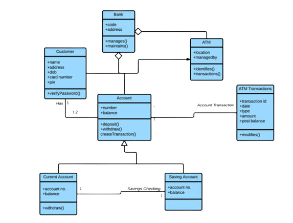
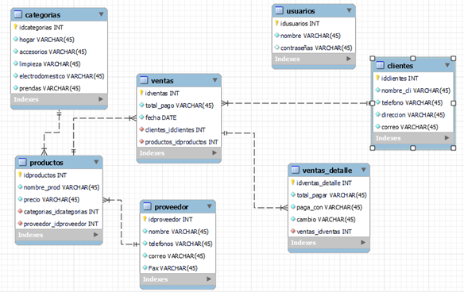

ANALISIS Y DESARROLLO DE SOFTWARE (2675841)
DIAGRAMA DE CLASES DEL PROYECTO DE SOFTWARE
GA4-220501095-AA2-EV04

QUE ES UN DIAGRAMA DE CLASES?
En ingeniería de software, un diagrama de clases en Lenguaje Unificado de Modelado (UML)
es un tipo de diagrama de estructura estática que describe la estructura de un sistema
mostrando las clases del sistema, sus atributos, operaciones (o métodos), y las relaciones
entre los objetos.
DIAGRAMA DE CLASES DEL PROYECTO PURCHASE NETWORK

ENTIDADES
Las entidades son el fundamento del modelo entidad relación. Podemos adoptar como definición
de entidad cualquier cosa o parte del mundo que es distinguible del resto. Por ejemplo, en un
sistema bancario, las personas y las cuentas bancarias se podrían interpretar como entidades.
Las entidades pueden representar entes concretos, como una persona o un avión, o abstractas,
como por ejemplo un préstamo o una reserva. Se representan por medio de un rectángulo y pueden
ser de tipo: maestras, transaccionales, históricas y temporales..
ATRIBUTOS
Se representan mediante un círculo o elipse etiquetado con un nombre en su interior.
Cuando un atributo es identificativo de la entidad se suele subrayar dicha etiqueta.
Por motivos de legibilidad, los atributos suelen no aparecer representados en el
diagrama entidad-relación, sino descritos textualmente en otros documentos adjuntos.
RELACIÓN
Describe cierta dependencia entre entidades o permite la asociación de las mismas.
Por ejemplo: Si tenemos dos entidades, CLIENTE y HABITACIÓN, podemos entender la
relación entre ambas al tomar un caso concreto (ocurrencia) de cada una de ellas.
Entonces, podríamos tener la ocurrencia Habitación 502, de la entidad HABITACIÓN y
la ocurrencia Henry Johnson McFly Bogard, de la entidad CLIENTE, entre las que es
posible relacionar que la habitación 502 se encuentra ocupada por el huésped de
nombre Henry Johnson McFly Bogard.